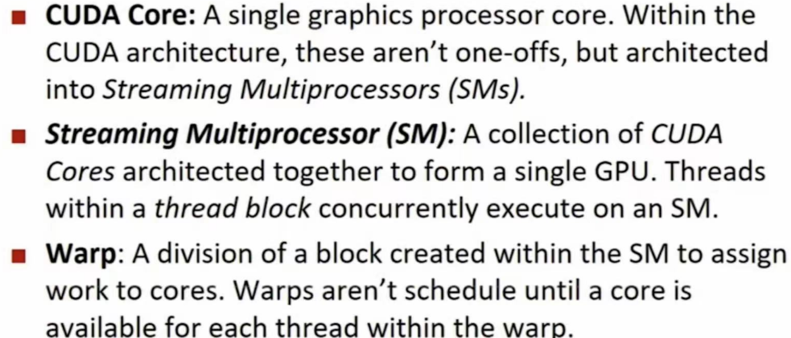

7月9日 GPU (Graphic Processing Unit)#
本节课主要由则可老师进行一个引导，之后便是通过官网对CUDA的学习，以及ppt上有一些没讲到的知识可以参考学习。当然我也建议大家可以去看CMU 15-418.可以获得一个知识上的补充。（这里则可老师对整个计算机硬件有一张非常好的框架图。

Why GPU#
-
算力的需求
-
Von Neumann Model has two key properties:
- Stored program (Instruction stored in a linear memory array; the interpretation of a stored )
- Sequential instruction processing(fixed output; one instruction processed at a time; )
- Each instruction takes a single clock cycle to execute.
AS: Architecture state
- Multi-Cycle Microarchitecture
单周期，中间执行多个命令的状态
- Pipeline CPU
- GPU会更偏向跑并行的。
- distinguish between Programming Model and Executing Model。
CUDA架构以及基础知识#
英伟达有自己的GPU架构以及编程语言。


以上两个图片解释了GPU的结构设计。（Global Memory and shared memory）（Kernel、 threads、 block、 grid 、 warp等概念要清晰）

SM is a division of a block created within the sm to assign the work.

这里有一个示例的GPU向量计算的例子。之后我们会详细介绍每个函数的使用。（尤其是从架构的角度出发理解算法设计尤其是“流”的使用。）

一些编程建议如下：

阅读完以上基本内容，此后便开始CUDA语法的介绍了！！！
GPU 函数的用法以及同步#
//'__global__' before GPU function
void CPUFunction()
{
printf("This function is defined to run on the CPU.\n");
}
__global__ void GPUFunction()
{
printf("This function is defined to run on the GPU.\n");
}
int main()
{
CPUFunction();
GPUFunction<<<1, 1>>>(); // <<<m,n>>> m is the number of blocks,n is the num of threads in one block
cudaDeviceSynchronize(); //同步
}
//CUDA 核函数可以访问能够识别如下两种索引的特殊变量：正在执行核函数的线程（位于线程块内）索引和线程所在的线程块（位于网格内）索引。这两种变量分别为 threadIdx.x 和 blockIdx.x
// Note the address of `a` is passed as first argument.
cudaMallocManaged(&a, size);
// Use `a` on the CPU and/or on any GPU in the accelerated system.
cudaFree(a);
//处理块配制与所需线程数不匹配
// Assume `N` is known
int N = 100000;
// Assume we have a desire to set `threads_per_block` exactly to `256`
size_t threads_per_block = 256;
// Ensure there are at least `N` threads in the grid, but only 1 block's worth extra
size_t number_of_blocks = (N + threads_per_block - 1) / threads_per_block;
some_kernel<<<number_of_blocks, threads_per_block>>>(N);
//CUDA 提供一个可给出网格中线程块数的特殊变量：gridDim.x。然后计算网格中的总线程数，即网格中的线程块数乘以每个线程块中的线程数：gridDim.x * blockDim.x。带着这样的想法来看看以下核函数中网格跨度循环的详细示例：
__global void kernel(int *a, int N)
{
int indexWithinTheGrid = threadIdx.x + blockIdx.x * blockDim.x;
int gridStride = gridDim.x * blockDim.x;
for (int i = indexWithinTheGrid; i < N; i += gridStride)
{
// do work on a[i];
}
}
错误处理
与在任何应用程序中一样，加速 CUDA 代码中的错误处理同样至关重要。即便不是大多数，也有许多 CUDA 函数（例如，内存管理函数）会返回类型为 cudaError_t 的值，该值可用于检查调用函数时是否发生错误。以下是对调用 cudaMallocManaged 函数执行错误处理的示例：
cudaError_t err;
err = cudaMallocManaged(&a, N) // Assume the existence of `a` and `N`.
if (err != cudaSuccess) // `cudaSuccess` is provided by CUDA.
{
printf("Error: %s\n", cudaGetErrorString(err)); // `cudaGetErrorString` is provided by CUDA.
}
启动定义为返回 void 的核函数后，将不会返回类型为 cudaError_t 的值。为检查启动核函数时是否发生错误（例如，如果启动配置错误），CUDA 提供 cudaGetLastError 函数，该函数会返回类型为 cudaError_t 的值。
/*
* This launch should cause an error, but the kernel itself
* cannot return it.
*/
someKernel<<<1, -1>>>(); // -1 is not a valid number of threads.
cudaError_t err;
err = cudaGetLastError(); // `cudaGetLastError` will return the error from above.
if (err != cudaSuccess)
{
printf("Error: %s\n", cudaGetErrorString(err));
}
最后，为捕捉异步错误（例如，在异步核函数执行期间），请务必检查后续同步 CUDA 运行时 API 调用所返回的状态（例如 cudaDeviceSynchronize）；如果之前启动的其中一个核函数失败，则将返回错误。
Debugging#
inline cudaError_t checkCuda(cudaError_t result)
{
if (result != cudaSuccess) {
fprintf(stderr, "CUDA Runtime Error: %s\n", cudaGetErrorString(result));
assert(result == cudaSuccess);
}
return result;
}

const int a = 2<<20; // 左移20位
使用nsys性能分析器帮助应用程序迭代地进行优化#
如要确保优化加速代码库的尝试真正取得成功，唯一方法便是分析应用程序以获取有关其性能的定量信息。nsys 是指 NVIDIA 的Nsight System命令行分析器。该分析器附带于CUDA工具包中，提供分析被加速的应用程序性能的强大功能。
nsys 使用起来十分简单，最基本用法是向其传递使用 nvcc 编译的可执行文件的路径。随后 nsys 会继续执行应用程序，并在此之后打印应用程序 GPU 活动的摘要输出、CUDA API 调用以及统一内存活动的相关信息。我们稍后会在本实验中详细介绍这一主题。
在加速应用程序或优化已经加速的应用程序时，我们应该采用科学的迭代方法。作出更改后需分析应用程序、做好记录并记录任何重构可能会对性能造成何种影响。尽早且经常进行此类观察通常会让您轻松获得足够的性能提升，以助您发布加速应用程序。此外，经常分析应用程序将使您了解到对 CUDA 代码库作出的特定更改会对其实际性能造成何种影响：而当只在代码库中进行多种更改后再分析应用程序时，将很难得知这一点。
nsys profile将生成一个qdrep报告文件，该文件可以以多种方式使用。 我们在这里使用--stats = true标志表示我们希望打印输出摘要统计信息。 输出的信息有很多.
!nsys profile --stats=true ./single-thread-vector-add
可以向nsys profile提供-f标志以允许覆盖现有的报告文件
流多处理器（Streaming Multiprocessors）及查询GPU的设备配置#
本节将探讨了解 GPU 硬件的特定功能，以进一步促进优化。学习完流多处理器后，您将尝试进一步优化自己一直执行的加速向量加法程序。
#include <stdio.h>
int main()
{
/*
* Device ID is required first to query the device.
*/
int deviceId;
cudaGetDevice(&deviceId);
cudaDeviceProp props;
cudaGetDeviceProperties(&props, deviceId);
/*
* `props` now contains several properties about the current device.
*/
int computeCapabilityMajor = props.major;
int computeCapabilityMinor = props.minor;
int multiProcessorCount = props.multiProcessorCount;
int warpSize = props.warpSize;
printf("Device ID: %d\nNumber of SMs: %d\nCompute Capability Major: %d\nCompute Capability Minor: %d\nWarp Size: %d\n", deviceId, multiProcessorCount, computeCapabilityMajor, computeCapabilityMinor, warpSize);
}
获得统一内存的细节#
您一直使用 cudaMallocManaged 分配旨在供主机或设备代码使用的内存，并且现在仍在享受这种方法的便利之处，即在实现自动内存迁移且简化编程的同时，而无需深入了解 cudaMallocManaged 所分配统一内存 (UM) 实际工作原理的详细信息。nsys profile 提供有关加速应用程序中 UM 管理的详细信息，并在利用这些信息的同时结合对 UM 工作原理的更深入理解，进而为优化加速应用程序创造更多机会。
统一内存(UM)的迁移#
分配 UM 时，内存尚未驻留在主机或设备上。主机或设备尝试访问内存时会发生 页错误，此时主机或设备会批量迁移所需的数据。同理，当 CPU 或加速系统中的任何 GPU 尝试访问尚未驻留在其上的内存时，会发生页错误并触发迁移。
能够执行页错误并按需迁移内存对于在加速应用程序中简化开发流程大有助益。此外，在处理展示稀疏访问模式的数据时（例如，在应用程序实际运行之前无法得知需要处理的数据时），以及在具有多个 GPU 的加速系统中，数据可能由多个 GPU 设备访问时，按需迁移内存将会带来显著优势。
有些情况下（例如，在运行时之前需要得知数据，以及需要大量连续的内存块时），我们还能有效规避页错误和按需数据迁移所产生的开销。
本实验的后续内容将侧重于对按需迁移的理解，以及如何在分析器输出中识别按需迁移。这些知识可让您在享受按需迁移优势的同时，减少其产生的开销。
异步内存预取#
在主机到设备和设备到主机的内存传输过程中，我们使用一种技术来减少页错误和按需内存迁移成本，此强大技术称为异步内存预取。通过此技术，程序员可以在应用程序代码使用统一内存 (UM) 之前，在后台将其异步迁移至系统中的任何 CPU 或 GPU 设备。此举可以减少页错误和按需数据迁移所带来的成本，并进而提高 GPU 核函数和 CPU 函数的性能。
此外，预取往往会以更大的数据块来迁移数据，因此其迁移次数要低于按需迁移。此技术非常适用于以下情况：在运行时之前已知数据访问需求且数据访问并未采用稀疏模式。
CUDA 可通过 cudaMemPrefetchAsync 函数，轻松将托管内存异步预取到 GPU 设备或 CPU。以下所示为如何使用该函数将数据预取到当前处于活动状态的 GPU 设备，然后再预取到 CPU：
int deviceId;
cudaGetDevice(&deviceId); // The ID of the currently active GPU device.
cudaMemPrefetchAsync(pointerToSomeUMData, size, deviceId); // Prefetch to GPU device.
cudaMemPrefetchAsync(pointerToSomeUMData, size, cudaCpuDeviceId); // Prefetch to host. `cudaCpuDeviceId` is a
// built-in CUDA variable.
手动内存分配和复制#
尽管 cudaMallocManaged 和 cudaMemPrefetchAsync 函数性能出众并能大幅简化内存迁移，但有时也有必要使用更多手动内存分配方法。这在已知只需在设备或主机上访问数据时尤其如此，并且因免于进行自动按需迁移而能够收回数据迁移成本。
此外，通过手动内存管理，您可以使用非默认流同时开展数据传输与计算工作。在本节中，您将学习一些基本的手动内存分配和拷贝技术，之后会延伸应用这些技术以同时开展数据拷贝与计算工作。
以下是一些用于手动内存管理的 CUDA 命令：
cudaMalloc命令将直接为处于活动状态的 GPU 分配内存。这可防止出现所有 GPU 分页错误，而代价是主机代码将无法访问该命令返回的指针。cudaMallocHost命令将直接为 CPU 分配内存。该命令可“固定”内存(pinned memory)或“页锁定”内存(page-locked memory)，此举允许将内存异步拷贝至 GPU 或从 GPU 异步拷贝至内存。固定内存过多则会干扰 CPU 性能，因此请勿无端使用该命令。释放固定内存时应使用cudaFreeHost命令。- 无论是从主机到设备还是从设备到主机，
cudaMemcpy命令均可拷贝（而非传输）内存。
手动内存管理示例#
以下是一段演示使用上述 CUDA API 调用的代码。
int *host_a, *device_a; // Define host-specific and device-specific arrays.
cudaMalloc(&device_a, size); // `device_a` is immediately available on the GPU.
cudaMallocHost(&host_a, size); // `host_a` is immediately available on CPU, and is page-locked, or pinned.
initializeOnHost(host_a, N); // No CPU page faulting since memory is already allocated on the host.
// `cudaMemcpy` takes the destination, source, size, and a CUDA-provided variable for the direction of the copy.
cudaMemcpy(device_a, host_a, size, cudaMemcpyHostToDevice);
kernel<<<blocks, threads, 0, someStream>>>(device_a, N);
// `cudaMemcpy` can also copy data from device to host.
cudaMemcpy(host_a, device_a, size, cudaMemcpyDeviceToHost);
verifyOnHost(host_a, N);
cudaFree(device_a);
cudaFreeHost(host_a); // Free pinned memory like this.
除了cudaMemcpy之外，还有cudaMemcpyAsync，只要固定了主机内存，它就可以从主机到设备或从设备到主机异步复制内存，这可以通过使用cudaMallocHost分配它来完成。
与核函数的执行类似，cudaMemcpyAsync在默认情况下仅相对于主机是异步的。默认情况下，它在默认流中执行，因此对于GPU上发生的其他CUDA操作而言，它是阻塞操作。但是，cudaMemcpyAsync函数将非默认流作为可选的第5个参数。通过向其传递非默认流，可以将内存传输与其他非默认流中发生的其他CUDA操作并发。
一种常见且有用的模式是结合使用固定主机内存，非默认流中的异步内存副本和非默认流中的核函数执行，以使内存传输与核函数的执行重叠。
在以下示例中，我们并非在等待整个内存拷贝完成之后再开始运行核函数，而是拷贝并处理所需的数据段，并让每个拷贝/处理中的数据段均在各自的非默认流中运行。通过使用此技术，您可以开始处理部分数据，同时为后续段并发执行内存传输。使用此技术计算操作次数的数据段特定值和数组内的偏移位置时必须格外小心，如下所示：
int N = 2<<24;
int size = N * sizeof(int);
int *host_array;
int *device_array;
cudaMallocHost(&host_array, size); // Pinned host memory allocation.
cudaMalloc(&device_array, size); // Allocation directly on the active GPU device.
initializeData(host_array, N); // Assume this application needs to initialize on the host.
const int numberOfSegments = 4; // This example demonstrates slicing the work into 4 segments.
int segmentN = N / numberOfSegments; // A value for a segment's worth of `N` is needed.
size_t segmentSize = size / numberOfSegments; // A value for a segment's worth of `size` is needed.
// For each of the 4 segments...
for (int i = 0; i < numberOfSegments; ++i)
{
// Calculate the index where this particular segment should operate within the larger arrays.
segmentOffset = i * segmentN;
// Create a stream for this segment's worth of copy and work.
cudaStream_t stream;
cudaStreamCreate(&stream);
// Asynchronously copy segment's worth of pinned host memory to device over non-default stream.
cudaMemcpyAsync(&device_array[segmentOffset], // Take care to access correct location in array.
&host_array[segmentOffset], // Take care to access correct location in array.
segmentSize, // Only copy a segment's worth of memory.
cudaMemcpyHostToDevice,
stream); // Provide optional argument for non-default stream.
// Execute segment's worth of work over same non-default stream as memory copy.
kernel<<<number_of_blocks, threads_per_block, 0, stream>>>(&device_array[segmentOffset], segmentN);
// `cudaStreamDestroy` will return immediately (is non-blocking), but will not actually destroy stream until
// all stream operations are complete.
cudaStreamDestroy(stream);
}